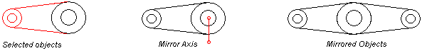
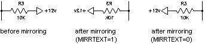

Autodesk AutoCAD 2021: ActiveX Developer's Guide > Create and Edit AutoCAD Entities > About Modifying Objects (VBA/ActiveX) >
Mirroring creates a mirror image copy of an object around an axis or mirror line. You can mirror all drawing objects.
To mirror an object, use the Mirror method provided for that object. This method requires two coordinates as input. The two coordinates specified become the endpoints of the mirror line around which the base object is reflected. In 3D, this line orients a mirroring plane perpendicular to the XY plane of the UCS containing the mirror line.
Unlike the MIRROR command in AutoCAD, this method places the reflected image into the drawing and retains the original object. (To remove the original object, use the Erase method.)

To manage the reflection properties of Text objects, use the AutoCAD MIRRTEXT system variable. The default setting of MIRRTEXT is On (1), which causes Text objects to be mirrored just as any other object. When MIRRTEXT is Off (0), text is not mirrored. Use the GetVariable and SetVariable methods to query and set the MIRRTEXT setting.

You can mirror a Viewport object in paper space, although doing so has no effect on its model space view or on model space objects.
This example creates a lightweight polyline and mirrors that polyline about an axis. The newly created polyline is colored blue.
Sub Ch4_MirrorPolyline() ' Create the polyline Dim plineObj As AcadLWPolyline Dim points(0 To 11) As Double points(0) = 1: points(1) = 1 points(2) = 1: points(3) = 2 points(4) = 2: points(5) = 2 points(6) = 3: points(7) = 2 points(8) = 4: points(9) = 4 points(10) = 4: points(11) = 1 Set plineObj = ThisDrawing.ModelSpace.AddLightWeightPolyline(points) plineObj.Closed = True ZoomAll ' Define the mirror axis Dim point1(0 To 2) As Double Dim point2(0 To 2) As Double point1(0) = 0: point1(1) = 4.25: point1(2) = 0 point2(0) = 4: point2(1) = 4.25: point2(2) = 0 ' Mirror the polyline Dim mirrorObj As AcadLWPolyline Set mirrorObj = plineObj.Mirror(point1, point2) Dim col As New AcadAcCmColor Call col.SetRGB(125, 175, 235) mirrorObj.TrueColor = col ZoomAll End Sub